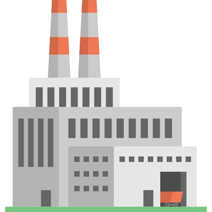

✕
Fechar
Início
Pré-Escolar
1º Ano
2º Ano
3º Ano
4º Ano
Voltar
Fábrica dos Plurais

Multiplica as palavras irregulares!
balão
balões
balões
Escolhe o teu desafio!
O ENIGMA DO -ÃO
Desvenda os três plurais: -ões, -ães e -ãos
MISSÃO -M e -L
Transforma nuvens, caracóis e cores
AVENTURA DO -IL
Plural das palavras agudas e graves
SUPER CASOS ESPECIAIS
Palavras invariáveis e finais em -es
EXPLORAR JOGO "SINGULAR E PLURAL" (2.º ANO)
1
/
10
0
Fábrica Completa!
Erros cometidos:
0
REPETIR JOGO
OUTRO JOGO
✕
✕